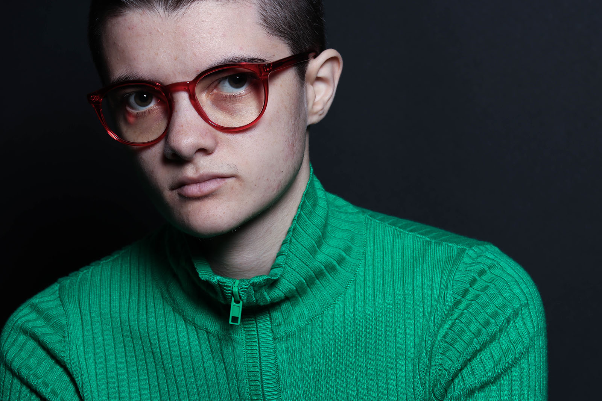
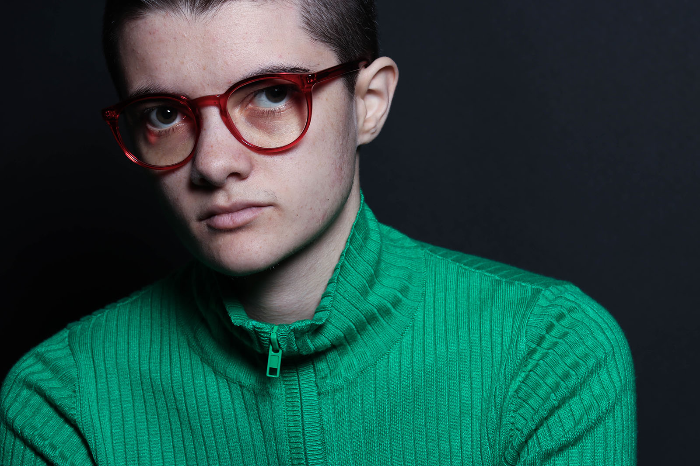
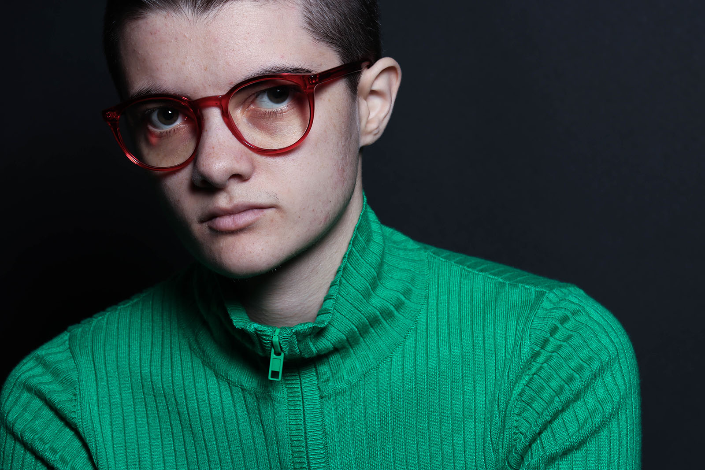
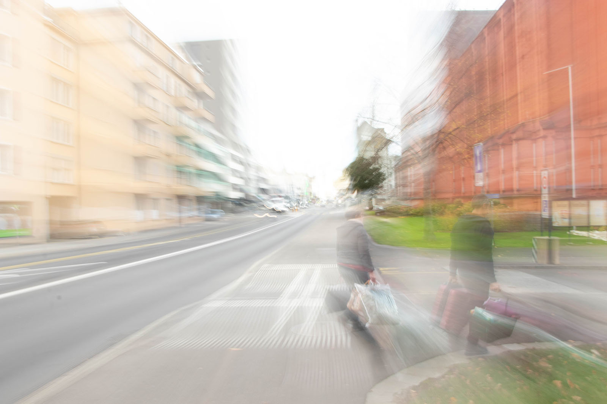
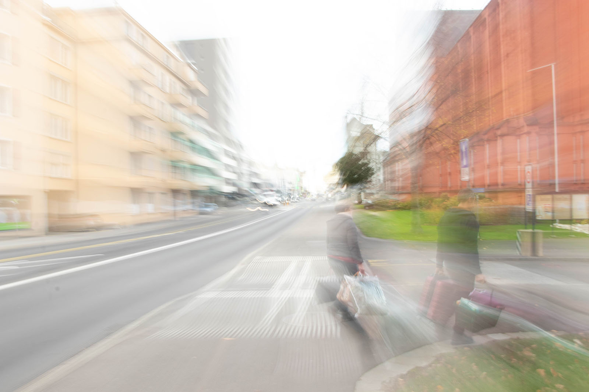

Voici un simple site pour vous présenter mes différentes photos réalisées lors du CIE3 au CPNE. Il nous était demandé un certains nombres de photos par thème. Vous pouvez voir les différents thèmes dans le menu et vous rendre à un spécifiquement ou simplement survoler toutes les photos 😃 👀
C'était pour nous l'occasions de tester différents types d'éclairage. (10 photos)

Nous avons eu la chance d'avoir une lampe UV qui nous a permis de faire de jolies photos de chaussures. (5 photos)


Il y avait différents thèmes à travailler: portrait, flou, longue exposition, paysage et architecture. (15 photos)


 



Là aussi, on a pu essayer de faire des photos dans différents thèmes. (5 photos)


Nous avons choisis de faire une fausse pub pour du thé froid. C'est typiquement quelque chose que l'on pourrait nous demander en tant que médimaticienne. Tu peux cliquer sur la vidéo pour la voir avec le son. (1 vidéo par groupe)
Là encore nous avons pu essayer différentes lumières en studio. (10 photos)

Le CIE 3 a été pour moi très interessant. Je trouve par contre un peu dommage qu'on ne nous pousse pas plus loin. Je m'attendais à devoir faire un peu moins de photos mais de plus les travailler ou qu'on nous montre plus l'utilisation des lumières au studio. Je me suis également sentie limitée par le drone: petite autonomie de la batterie et petit rayon de vol. La réalisation du site a par contre été une chouette expérience qui a pu me faire progresser et acquérir de nouvelles compétences. 😃 ✨